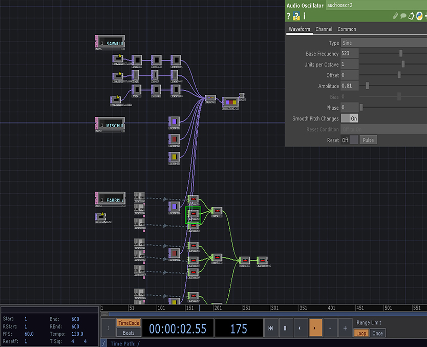
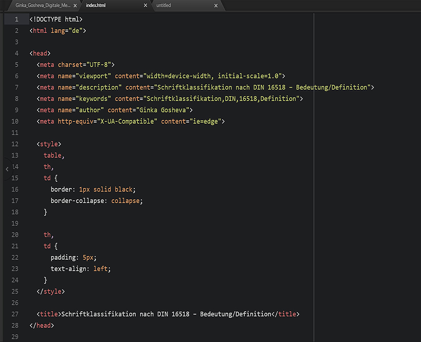
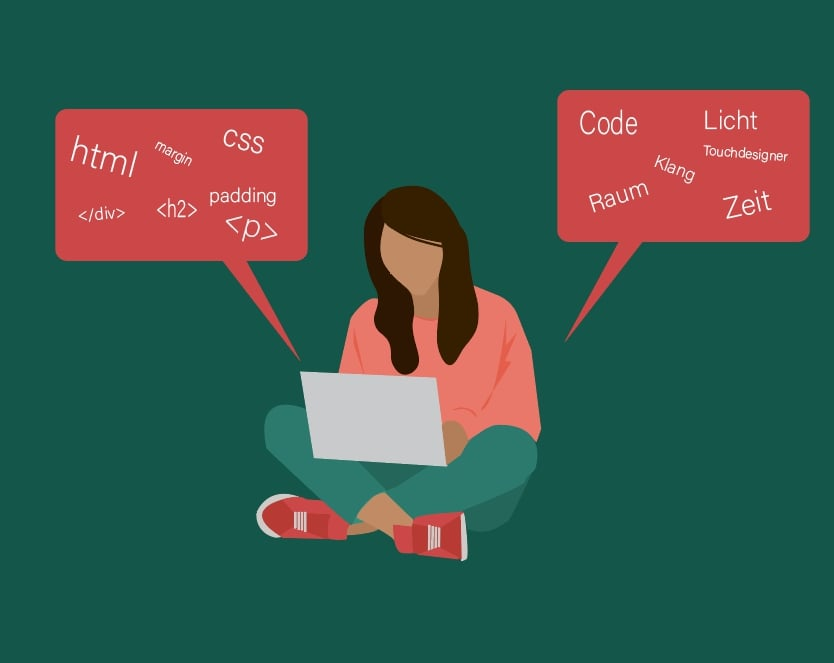

Rückblick erstes Semester Code und Digitale Medientechnologie
Im ersten Semester Code und Medientechnologie wurden wir in die Programmierung eingeführt. Mein neues Wissen über HTML, CSS und Touchdesigner haben mir geholfen, einen neuen Weg zu finden, mich kreativ auszudrücken. Meine ersten Eindrücke und Kenntnisse möchte ich in den nächsten Texten erläutern und welche Bedeutung sie für meine Zukunft als Kommunikationsdesignerin haben.
Code
Der erste Tag an der Universität im Studiengang Kommunikationsdesign war anders als ich es mir vorgestellt hatte. Als ich das Wort Code hörte, verband ich es mit der Codierung mit HTML und CSS. Als wir Studenten uns zum ersten Mal beim Saana Gebäude trafen, habe ich mich gewundert, was genau wir tun müssen, da wir zwei Gegenstände nehmen mussten um Töne zu erzeugen. Ich konnte in keiner Weise verstehen, was dass mit Codierung mit HTML und CSS zu tun hat. Mit Hilfe dieser beiden Gegenstände, die jeder Schüler trug, konnten wir erstaunliche Musik schaffen und dann wurde mir klar, das meine Vorstellungen von Code völlig falsch waren. Wir haben gelernt wer John Cage ist und was die Begriffe Klang, Ton, Geräusch und Knall bedeuten. Die nächsten Themen die wir studierten, waren Licht, Raum und Zeit. Wir haben auch Audacity kennengelernt, mit dem wir Sounds bearbeitet haben, die wir zuvor in der Medienwerkstatt aufgenommen hatten. ie nächsten Themen, die wir studierten, waren Licht, Raum und Zeit. Wir haben auch das Audicity-Programm kennengelernt, mit dem wir Sounds berarbeitet haben, die wir zuvor in der Medienwerkstatt aufgenommen hatten.

Neben all diesen interessanten Dingen habe ich gelernt, wie man Touchdesigner bedient. Touchdesigner ist eine visuelle Programmiersprache zum Erstellen von Multimedia-Inhalten. Es besteht aus kleinen Blöcken, von denen jeder wie ein kleines Stück Code ist. Diese Sprache wurde speziell für die Präsentation interaktiver Installationen entwickelt. Wir haben das erworbene Wissen auf die Themen: Klang, Licht, Raum und Zeit angewendet, indem wir zahlreiche Sounds, Fotos und verschiedene Effekte für die Codierung einer Rauminstallation verwendet haben. Ich fand dieses Programm sehr interessant und werde es gerne weiter lernen, weil es mich zu neuen kreativen Ideen inspiriert hat.
Digitale Medientechnologie
Heutzutage ist es ziemlich einfach, eine kostenlose Vorlage für eine Webseite zu erhalten. Auf diese Weise wird die Webseite nicht eindeutig und ähnelt vielen anderen im Internet. Durch das Erlernen von HTML und CSS in den Vorlesungen bei Digitale Medientechnologie habe ich gelernt, meine ideale Seite zu schreiben und meine Ideen zu visualisieren. HTML und CSS sind zwei der Haupttechnologien für die Erstellung der Website-Programmierung. HTML wird zur Beschreibung und Entwicklung von Webseiten verwendet. Mit der Hilfe von HTML werden Header, Paragraph, Fotos, Links definiert, um eine Webseite zu strukturieren. CSS bietet visuelle und akustische Layouts für verschiedene Geräte. Damit machen wir die Seite schön. CSS verwenden wir, um Webseiten mit ausgefallenen Schriftarten, verschiedenen Farben, wunderschönen Hintergründen und 3D-Effekten auszustatten. Es ist auch nützlich, diese interessanten Dinge zu lernen, denn selbst wenn ich mich in Zukunft nicht mehr mit HTML, CSS und Touchdesigner als Designerin beschäftige, sind sie immer nützlich. Für s
Neue Möglichkeiten eröffnen sich
Die Kenntnisse, die ich in HTML, CSS und Code erworben habe, erweitern meine Karrieremöglichkeiten. Als Kommunikationsdesignerin sind HTML, CSS sowie Touchdesigner hervorragende Werkzeuge, mit denen ich mich kreativ ausdrücken kann. Das im ersten Semester der Digital MedienTechnologie und Code erworbene Wissen ermöglicht es mir auch, zukünftige Projekte durchzuführen, in denen ich eine Webseite mit Animationen und Effekte aus Touchdesigner erstellen kann.
